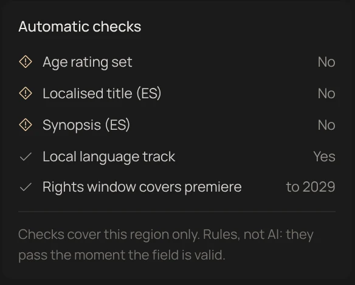
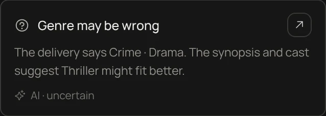

Rule checks
Pass or fail, never a guess. They live in the Readiness panel and pass the moment the field is valid.

AI suggestions
Judgement calls only. Each card names its evidence and how sure it is.
